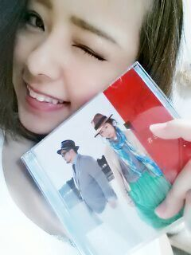

| 2014/05 05 Mon | 〜君と踊ろう〜...* ろっ てぃー |
今日も１日おつかれさまですっ

ろってぃーだよ..* キランっ


私が持ってるこのCDは ルヒカちゃんのCDです ! !
TSUBAKIのCMでおなじみの『 独り言花 』という曲を歌っている方ですね ^^
そしてルヒカちゃんが新曲『君と踊ろう 』を発売したということで頂きました〜.♪
プリンシパルが終わって少し落ち着いたら、ご飯にでも誘ってみようと思ってます

こうゆうCDだよ〜\(*´∀｀)/
いい声しているのでよかったら聴いてみてくださいね..*

そしてそして 今日は私・まりか・あすか そしてマネージャー様と
『
BOOM BOOM SATELLITES
』さんのライブを見てきました !!!
本当にかっこよかったです、すご過ぎました )))
歌かっこいいし ギター振り乱してるし ドラム壊れそうな位叩いてましたし、、、
あ〜 やばかったぁぁぁ(ノ´∀｀*)
BOOM BOOM SATELLITES さんありがとうございます♪
また 更新します
大好きだよ？ のし Rotty
本当にかっこよかったです、すご過ぎました )))
歌かっこいいし ギター振り乱してるし ドラム壊れそうな位叩いてましたし、、、
あ〜 やばかったぁぁぁ(ノ´∀｀*)
BOOM BOOM SATELLITES さんありがとうございます♪
また 更新します
大好きだよ？ のし Rotty
コメント(108)
2014/05/05 00:12